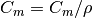
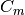

proffilo.concentration.convert_mass_to_volumetric¶
-
proffilo.concentration.convert_mass_to_volumetric(mass_conc, density=2650)¶ Convert mass concentration to volumetric concentration.
Converts a given mass concentration (e.g., g/L) to volumetric concentration by assuming a constant sediment density. Formalized as:

where is volumetric concentration,  is mass concentration, and
 is sediment density with the same units
as
is sediment density with the same units
as mass_conc. For example, ifmass_concis given in units g/L, thendensityshould be given in g/L.- Parameters
mass_conc (float) – Mass concentration to be converted.
density (float, optional) – Sediment density. If not supplied, density of quartz is assumed (2650 g/L).
- Returns
vol_conc – Volumetric concentration.
- Return type
float
Examples
>>> pf.concentration.convert_mass_to_volumetric(2, 2650) 0.0007547169811320754